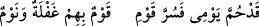

işârettir. “Mîm”, zevâl ve fenâ tozunun çadırlarının etrafına ulaşamayacağı Allah’ın
mülküne îmâdır.
Baklî şöyle der: “Hâ ezel hayatı; Mîm ise aşk ve muhabbet pınarıdır. Her kimi ki
Allah kendisine yakın olma şerefiyle şereflendirir, onu, kendi hayat tarzıyla berhayât
oluncaya dek hayat pınarından suvarır ve bundan böyle o kişiye bir daha fenâ ârız
olmaz. Böylece o, hayâtın ‘hâ’sından hikmetâmîz ibarelerle ve muhabbetin ‘mîm’inden
meçhul bilgilerin işaretleriyle konuşmaya başlar ki bunları kıdem ve bekâ pınarlarına
varanlardan başkası kavrayamaz.”
Hizbü’l-bahr şerhi’nde der ki: Hâ Mîm, himâyeye işâret etmektedir. Bu sebepledir ki
Peygamberimiz (s.a.) Uhud savaşında “Parolanız «Hâ Mîm lâ yunsarûn» olsun”
buyurmuştur. Bunun mânası: “Allah’ın sizleri himaye etmesi sayesinde düşmanlar size
karşı zafere erişemesinler” demektir. Zira Allah îman edenlerin dostudur ve kâfirlerin
dostu yoktur! Böylece himâye sâyesinde ilâhî inâyet hâsıl olmuş olur. Himâye, hazret-i
ef‘âlden yâni gelip kulun imdâdına yetişen ilâhî fiillerdendir. İş olup bittikten, olacak
olanlar gerçekleştikten sonra “humme’l-emru” denmektedir. “Humme emrullah” ifadesi
ise Allah’ın emri veya kıyâmet günü yaklaştı demektir.
Bir şair şöyle der:
Yaklaşınca benim günüm, sevindi birileri
Öyleleri ki daimîdir uyku ve gafletleri…
Keşfü’l-esrâr’da der ki: “Hâ”, “muhabbet”e, “mîm”, “minnet”e işârettir. Allah şöyle
seslenir: Ey kendi hüneri ile değil de benim “muhabbet”imin “hâ”sı ile dost olan. Ey
kendi taati ile değil de benim “minnet”imin “mîm”i ile beni bulan. Ey benim kendisini
dost edindiğim ve kendisi beni tanımamış bulunan kulum. Ey benim kendisini istediğim
ve kendisi beni bilmeyen kulum. Ey benim kendisi için olduğum, kendisi ise benim için
olmayan kulum.
Yüz binlerce kişi bizim dergâhımıza durup bizi talep ettiler; dualar ettiler, iltifat
etmedik. Sizi ey Ahmed’in ümmeti, sizin talebiniz/isteğiniz olmadan “Benden istemeden
size verdim. Dua etmenize hacet kalmadan taleplerinizi karşıladım. Bana istiğfar
etmeden günahlarınızı bağışladım.” dedik. Geçmiş peygamberlerin o rağbet ve şevki
sanadır. İşte Halîl bu sebepten “Bana, sonra gelecekler içinde iyilikle anılmak nasib
eyle.” (Şuâra, 26’84) Musâ kelîmullah da “Beni ümmet-i Muhammed (s.a.)’den kıl.”
diyordu. Bu senin amellerini onlara açıkladığımızdan değildir. Eğer biz sizin
amellerinizi onlara anlatmış olsaydık, hepsi sizden uzaklaşırlardı. Fakat size verdiğimiz
fazilet ve nimetleri onlara açıkladık. Sizden önce seçtiklerimizi birer birer seçtik. Şöyle
ki: “Şüphesiz Allah, Âdem’i, Nuh’u, İbrâhim âilesi ile İmran âilesini seçti.” (Âl-i
İmran 3/33) Sıra size gelince, genel olarak şöyle dedik: Siz bizim seçtiğimiz en hayırlı